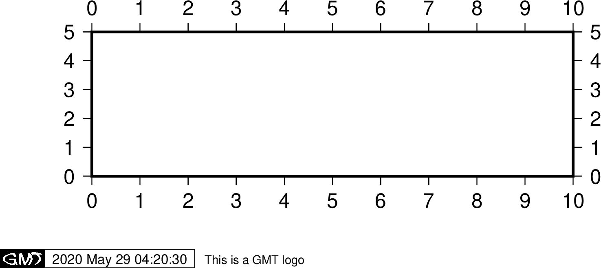

-U 選項¶
-U 選項用於在圖上繪製一個帶有GMT標識的時間戳。其語法爲:
-U[label][+c][+jjust][+odx/dy]
- -U 不加任何參數時會在當前圖的左下角添加一個帶GMT標識的時間戳
- -Ulabel 會在時間戳後打印字符串 label，比如
-U"This is string" - -U+c 會在時間戳後打印當前命令
- -U+jjust+odx/dy 用於控制將時間戳的哪個錨點
與當前底圖的左下角對齊，以及其偏移量。例如，
-U+jBL+o0/0表示將時間戳的左下角與底圖左下角對齊
GMT參數中有一些可以控制時間戳：
- MAP_LOGO 控制是否繪製時間戳，默認值爲 FALSE
- MAP_LOGO_POS 用於控制時間戳的位置
- FORMAT_TIME_STAMP 用於控制時間戳的顯示格式
- FONT_LOGO 時間戳中文本字體
gmt basemap -R0/10/0/5 -JX10c/3c -Bx1 -By1 -U"This is a GMT logo" -png GMT_-U

-U 選項加時間戳
重要
每個帶有 -U 選項的繪圖命令都會繪製一遍時間戳，因而一張圖中只需要在一個繪圖命令中使用 -U 即可。
注解
修改UNIX 環境變量 TZ 可以控制時間戳中時間所使用的時區，默認爲當地時區。